Bernhard Riemann’s “Dirichlet’s Priniciple”
by Bruce Director
In his revolutionary essay of 1857, {Theory of Abelian Functions},
Bernhard Riemann brought to light the deeper epistemological significance of
the complex domain, through a new and bold application of a principle of physical
action which he called, “Dirichlet’s Principle”. Riemann’s
approach, combined with what he enunciated in his habilitation dissertation
of 1854, not only ushered in a revolution in scientific thinking: it ignited
a counter-reaction as fierce as the one launched, for the same reasons, against
Cusa, Kepler, Fermat and Leibniz by the Venetian-British controlled empiricist
school of Gallileo, Newton, Euler and Lagrange; a counter-reaction that continues
to rage to this day, and with implications that reach far beyond the specific
setting of Riemann’s 1857 paper. Despite the volumes that have been written
on this subject, from Riemann’s time to ours, an honest examination of
the history of the matter reveals that, just as Gauss demonstrated the fraud
of Euler, Lagrange and D’Alembert in his 1799 proof of the fundamental
theorem of algebra, Riemann was right, and his critics, like today’s Straussian
controllers of Bush and Cheney, were malevolent frauds.
We cannot know for sure whether, when Riemann chose to call this method an application
of “Dirichlet’s Principle”, he expected to provoke the reaction
he received, or if he was merely stating what would have been obvious for anyone
within the extended network of Abraham Kaestner’s students. Nevertheless,
it is fortunate for us that he used that name, as it enables us to fairly accurately
reconstruct, not only the scientific origins of Riemann’s thought, but
the historical-political process from which it arose.
Lejeune-Dirichlet
Johann Peter Gustav Lejeune-Dirichlet was a pivotal figure
in early 19th Century science. Born in 1805 to a family of Belgian origin living
near Aachen, his early education took place in Bonn. At the age of 16, with
a copy of Gauss’s {Disquisitiones Arithmeticae} under his arm, he went
to Paris to audit the lectures at the College de France and the Faculte des
Sciences. After a year, Dirichlet became employed as a tutor by General Maximilien
Sebastien Foy, a republican member of the Chamber of Deputies, who introduced
him to Alexander von Humboldt. After Foy’s death in 1825, von Humboldt
recruited Dirichlet back to Germany, arranged for him to get a degree (even
though Dirichlet refused to speak Latin), and eventually succeeded in obtaining
for him a professorship at the University of Berlin. There, in addition to meeting,
and marrying, Moses Mendelssohn’s granddaughter, Rebecca, (the sister
of the composer Felix Mendelssohn), Dirichlet developed a fruitful collaboration
with Jacobi and Jakob Steiner , including a tour with both to Italy in 1843
under Alexander von Humboldt’s sponsorship.
In 1847 Riemann arrived in Berlin to study with Dirichlet, Jacobi and Steiner,
having spent the previous two years studying with Gauss. In 1849 he returned
to Goettingen to complete his studies and in 1851, under Gauss’s direction,
published his doctoral dissertation, {The Foundations for a general Theory of
Functions of a Complex Variable Magnitude}, in which he first applied his principle,
without mention of Dirichlet. When Gauss died in 1855, Dirichlet was appointed
his successor, bringing himself back into contact with Riemann, who, just seven
months earlier, had received permission to teach, after delivering his habilitation
lecture, {On the Hypotheses which Lie at the Foundations of Geometry}. In 1857,
Riemann published the {Theory of Abelian Functions} in which, for the first
time, he identified the principle on which his new theories were based, as “Dirichlet’s
Principle”. Two years later, Dirichlet died, and Riemann, now 33 years
old, was appointed to his chair, a position he held until his own, unfortunately
too early death, only seven years later.
The Potential
What Riemann called “Dirichlet’s Principle”,
arose out of Gauss’s application of the complex domain to his investigations
in geodesy and terrestrial magnetism; the former organized in collaboration
with Schumacher beginning in 1818, and the latter initiated by Alexander von
Humboldt in 1832. Both projects had enormous practical benefits. Each produced
detailed maps of their respective physical effects which were vital for infrastructure
development, and Humboldt’s project organized, for the first time, an
international collaborative network of scientists who would impact the development
of the physical economy from the Americas to Eurasia for generations. But Gauss
recognized that both projects posed deeper epistemological questions for science.
Writing in his {General Theory of Earthmagnetism} in 1839, Gauss said a complete
and accurate map of the observations is not, in itself, a proper goal for science.
“One has only the cornerstone, not the building, as long as one has not
subjugated the appearances to an underlying principle.” Citing the case
of astronomy as an example, Gauss said that mapping the observations of the
apparent motion of the heavenly bodies onto the celestial sphere is just a beginning.
Only once the underlying principle of gravitation is discovered, can the actual
orbits of the planets be determined.
Gauss recognized that the first step in geodesy and geomagnetism is the measurement
of changes in the effect of both phenomena on the measuring instruments. In
the case of geodesy, that meant changes in the direction of a plumb bob, or
plane level, as those changes are mapped onto the celestial sphere. The case
of geomagnetism is more complicated. Here he was measuring changes in the direction
of a compass needle, with respect to three directions and time. The general
question was: what is the characteristic nature of the principle of gravitation
or geomagnetism that would produce these apparent effects? The specific task
was: how, from these infinitesimally small measured changes in the apparent
effects, can that general characteristic be determined?
It is the second question that brings us more directly into contact with what
Riemann called “Dirichlet’s Principle”. However, the task
of understanding Dirichlet’s Principle will be made much easier if we
first look at the elementary, but congruent case of the catenary.
The relevant focus for this discussion is the devastating rebuke which Leibniz
and Bernoulli delivered to Gallileo and Newton over the case of the catenary.
Gallileo had insisted that all that need, or could, be known about the catenary
was a description of its visible shape. On the other hand, Leibniz and Bernoulli
insisted that the shape of the catenary was merely the visible effect of an
underlying physical principle, and the correct shape could not be determined
until the underlying principle was known. As was developed in previous installments
of this series, Leibniz and Bernoulli determined the characteristic nature of
that principle, by determining first, the changing physical effect of that principle
in the infinitesimally small, and then, by inversion, the overall characteristic
of the principle. The result was Leibniz’s discovery that the shape of
the hanging chain reflected the least-action effect of the principle of universal
gravitation, and that this effect could be expressed geometrically as the arithmetic
mean between two contrariwise exponential functions.
It is of extreme importance to emphasize that we are speaking here of the physical
hanging chain, not a formal mathematical expression. In a formal mathematical
expression the exponential curves have no boundary. The physical hanging chain
does--the positions of the hanging points. Consequently, the specific shape
of the chain is determined by the position of the hanging points relative to
the weight and length of the chain. If the positions of the hanging points change,
the position of every link in the chain also changes, but always in accordance
with the relationship cited above. In other words, as the boundary conditions
of the physical chain change, so does the chain’s specific path, but that
path’s general form, required by the principle of least-action, is always
a catenary. It will never become a parabola or any other curve. (See Figure
1.)
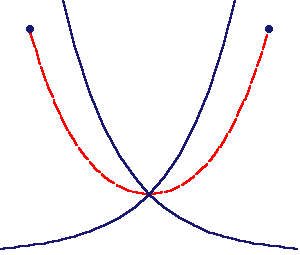
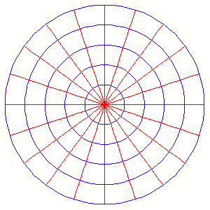
A more illustrative example is a set of orthogonal ellipses and hyperbolas. (See Figure 3.)
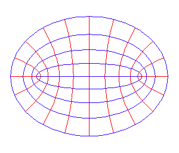
To get an intuitive grasp of their harmonic relationship, carry out the following thought. Each ellipse is associated with a confocal orthogonal hyperbola. Beginning at the point where both curves meet the axis, create in your mind a connected action that moves simultaneously on both curves. (See Figure 4.)
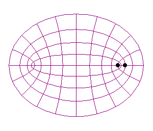
Note that as the curvature on the hyperbola becomes less curved,
so does the curvature on the corresponding ellipse, and at the same rate.
Thus, harmonic functions relate two sets of different curves such that the rate
of change of their respective curvatures is always equal. (Using Leibniz’s
calculus, we could calculate this relationship precisely, but an intuitive understanding
is sufficient for present purposes.)
Furthermore, a set of harmonic functions need not be familiar curves such as
circles, lines, ellipses, or hyperbolas. In fact, very complicated sets of functions
can be harmonic. (See Figure 5.)
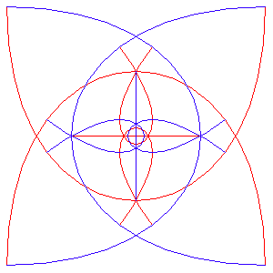
By contrast, a set of circles and hyperbolas is not harmonic, because the curvature
of the circle is constant, while the curvature of the hyperbola is changing.
Consequently, the two sets of curves are not orthogonal. (See Figure 6.)
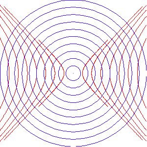
Gauss recognized that Leibniz’s principle of least-action with respect
to the surfaces and volumes encountered in phenomena like terrestrial gravitation
and magnetism, could be expressed by harmonic functions. One set of curves of
the harmonic function expressed the pathways of minimal change in the potential
for action, while the other, orthogonal curves expressed the pathways of maximum
change in the potential for action. For example, if the Earth were perfectly
spherical, its minimum and maximum of potential action could be expressed by
a series of concentric spherical shells and orthogonal planes. A cross-section
of such a configuration would be harmonically related circles and radial lines.
If the Earth were perfectly ellipsoidal, its potential would be expressed by
a set of triply orthogonal ellipsoids and hyperboloids whose cross sections
would be the harmonically related set of ellipses and hyperbolas illustrated
above.
But, as Gauss emphasized, the shape of the Earth is much more complicated than
a sphere or an ellipsoid, with respect to both gravity and magnetism and the
pathways of minimal and maximal potential for action were not such simple and
well known curves as circles, lines, ellipses or hyperbolas. Thus, a more complex
harmonic function must be found to express these principles. Such a function
could not be determined a priori, but only from the measured changes in the
effect of the Earth’s gravity or magnetism.
The question for Gauss was: how to determine the true physical shape of the
Earth, or the characteristic of the Earth’s magnetism, from the measured
infinitesimally small changes in its potential obtained by his geodetic and
magnetic measurements?
This begins to get us closer to a first approximation of what Riemann called
“Dirichlet’s Principle”.
To make a precise determination of the Earth’s surface, or magnetic effect,
as Gauss did, is quite complicated, but the principle on which his method was
based is within the scope of this pedagogy. If one recognizes, as Gauss did,
that the changes in the direction of the plumb bob are measuring the changes
in direction of the potential function, then the physical shape of the Earth
has the same relationship to this potential as the hanging points have to the
catenary. In other words, the surface of the Earth must be understood as merely
the boundary of the potential, or, as Gauss put it: “The physical surface
of the Earth is, in a geometric sense, the surface that is everywhere perpendicular
to the pull of gravity.”
A reference to the ancient Pythagorean problem of doubling the line, square
and cube can shed some light on this idea. The line is bounded by points, the
square by lines and the cube by squares. The size and position of these boundaries
is determined by the length, area or volume they enclose. For example, it is
the square that determines the size and position of its sides, even though it
is the latter that you see and the former that you don’t. The sides of
the square are lines, but they are produced by a different power, (potential),
than the lines produced from other lines. Similarly, the size and position of
the squares that form the boundaries of a cube are produced by a different power
(potential), than the squares formed by the diagonal of another square. Thus,
even though the power can not be seen, it can be measured by its unique, characteristic
effect on the boundaries of its action.
Now apply this same method of thought to the physical principles discussed above.
The catenary is a curve whose boundaries are points. A catenoid is a surface
whose boundaries are curves. The surface of the Earth is the boundary of a gravitational
volume. The magnetic effect of the Earth is still more complicated, and will
be taken up in more detail in a future pedagogical.
This connected relationship between the boundary conditions of a physical process
and the expression of the principle of least-action with respect to that physical
process, is the relationship to which Riemann is referring when he speaks of
“Dirichlet’s Principle.”
From Gauss to Dirichlet to Riemann
After succeeding Gauss in 1855, Dirichlet began lecturing
on Gauss’s potential theory at Goettingen while Riemann was preparing
his {Theory of Abelian Functions}. What Gauss, Dirichlet and Riemann all recognized,
was that complex functions, as the extension of Leibniz’s concept of the
catenary and natural logarithms, were uniquely suited to express the least-action
pathways of potential functions.
Gauss had already demonstrated this in his 1799 proof or the fundamental theorem
of algebra, where he showed that a complex algebraic expression produces two
surfaces whose curvatures are harmonically related. What Riemann attributes
to Dirichlet, is the principle that given a certain boundary condition, the
function that minimizes the action within it is a complex harmonic function.
Warm up to this idea on the familiar territory of the catenary. The boundary
conditions here are the positions of the hanging points. The “interior”
of this boundary is the curve itself. Within the curve is a singular point–the
lowest point. If the boundary conditions change, by changing the position of
the hanging points, so does the position of the lowest point. To state Dirichlet’s
principle in this simplified context, the catenary is the least-action pathway
of a hanging chain with these specified boundary conditions and singularity.
If the boundary conditions change, the shape of the curve changes correspondingly,
in accordance with the preservation of the principle of least-action.
Riemann inverted Dirichlet’s principle: {since the physical principle
of least-action is primary, the position of the hanging points and the lowest
point completely determine the shape of the chain!}
Now, make this same investigation with respect to a catenoid formed by a soap
film between two circular rings. This catenoid is a physical least-action, or
minimal surface. Embedded in this surface is an orthogonal set of curves of
minimal and maximal action. (Riemann later showed that these curves are harmonically
related. This will be illustrated in a future installment of this series.) Experiment
by changing the shape of these boundaries from circles, to ellipses, to irregular
smooth shapes, to polygons. When you change the position or shape of the boundaries
of this surface, the shape of the surface and the embedded curves change accordingly,
but the least-action principle is preserved.
Now, generalize this idea with some other pedagogical examples, illustrated
in the following animations. In Figure 7 we see a set of harmonically related
circles and radial lines that intersect at the center of the circles, being
transformed while maintaining their harmonic relationship.
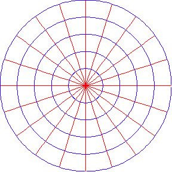
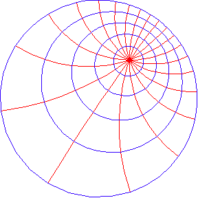
If the position of that intersection point changes, the radial
lines must be transformed into circular arcs, and their endpoints move along
the boundary in order to maintain their harmonic relationship. In the animation,
we see this effect as the point of intersection moves, first away from the center,
and then in a circular path around the center. This motion causes all positions
inside the boundary to change {as a whole}. What doesn’t change is the
harmonic, i.e. least-action, relationship.
This could also be thought of inversely: that the changes in position of the
intersection of the radial lines at the boundary, cause their point of intersection
to move in a circular arc, and their form to change from lines to circular arcs.
Or, infinitesimally small changes in the curvature of the pathways are determined
by the conditions at the boundary with respect to the position of the singularity.
Compare this action with the change in the position of the lowest point of the
catenary as the positions of the hanging points change, as illustrated in the
animation Figure 1. There, a change in the boundary points produced a change
along a single curve. Here, a change in the boundary curve produces a change
in a set of harmonically related curves within a surface.
Compare this with the problem Gauss confronted in, for example, determining
the location of the Earth’s magnetic poles from infinitesimally small
changes in the Earth’s magnetic effect. Gauss understood that those small
changes were connected to the position of the singularities, i.e. magnetic poles,
of the Earth’s magnetic effect. However, the exact location, or even the
number, of those poles was still unknown in Gauss’s time. On the basis
of the measurements obtained by von Humboldt’s network, Gauss determined
where those poles must be located. The famous American Wilkes expedition of
1837 was launched, in part, to confirm Gauss’s findings, which it did.
In Figure 8, this same effect is illustrated by moving the point of intersection
of the radial lines along the path of a lemniscate.
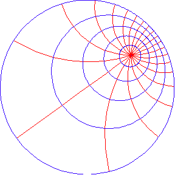
Notice again how this change in the position of the singularity,
changes the condition at the boundary, so that all the resulting relationships
remain harmonic.
Figure 9 animates the same process in which the shape of the boundary has been
changed to an ellipse, which correspondingly changes the shape of the orthogonal
curves into hyperbolas, and the intersection point into two foci.
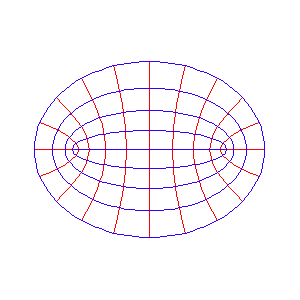
Of course, it could also be said that the radial lines are
changed into hyperbolas, which changes the circles into ellipses, and the intersection
point in to two foci. Or, that the intersection point is changed into two foci,
which changes the the boundary into an ellipse, and the radial lines into hyperbolas.
In short: {a physical process of least action is a connected action. Changing
any aspect of the process, changes everything else in the process correspondingly,
so as to preserve the least-action characteristic of the process. That is, it
is the physical principle of least-action that is primary.}
It was Riemann’s genius to recognize, through this application of Dirichlet’s
Principle, that the principle of least-action of a physical process could be
understood completely by the relationship between the boundary conditions and
the singularities, and that this relationship could be expressed uniquely by
Riemann’s geometric concept of complex functions. Moreover, Riemann showed
that the characteristic of least-action of a physical process could be changed,
in a fundamental way, only by the addition of a new principle. That change in
principle is expressed in a complex function, as a corresponding increase in
the number of singularities. In his {Theory of Abelian Functions} Riemann demonstrated
this by applying Dirichlet’s Principle to the higher transcendental functions
of Abel.
The deeper significance of this discovery can only be hinted at in this installment,
and will be taken up in more depth later, but it can be illustrated by the animation
of Figure 10, which expresses the principle of least-action with respect to
an elliptical function.
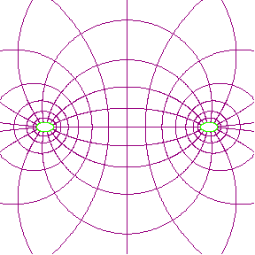
Riemann demonstrated that all elliptical functions, being functions
formed by the interaction of two connected principles, are expressed in the
complex domain as surfaces with two boundaries. (These boundaries are marked
in green in the animation.) In this animation you can see each boundary changing
differently, but connectedly, with the other, causing corresponding changes
in the minimal pathways, while at all times maintaining the overall harmonic
relationship of the function. In other words, the characteristic curvature of
these least-action pathways is determined, in this case, by the connected interaction
of two distinct principles.
A comparison between this and the previous examples indicates what Riemann emphasized,
that the only way to fundamentally change the characteristic of action of a
physical process is by the addition of the action of a new principle. This more
advanced question will be investigated more thoroughly in future pedagogicals.
A suggestive example from economics can also help illustrate this principle.
What is the relationship between all physical economic relationships and the
economic boundary conditions of physical infrastructure and cultural development?
What is the relationship between these boundary conditions and the singularities
represented by the introduction of new technologies? What is the effect on all
economic relationships, of a change, positive or negative, in these physical
economic boundary conditions?
Four years after Riemann’s death Karl Weierstrass criticized Riemann’s
application of Dirichlet’s Principle on formal mathematical grounds. Weierstrass
contended that it was inappropriate to speak mathematically of least-action,
unless a formal mathematical proof could be presented proving that a mathematical
minimum, or maximum, existed. While it is possible to produce a formal mathematical
example which has no minimum, all {physical} process are characterized by bounded
least-action. For example, as Cusa showed, there is no absolute maximum or absolute
minimum polygon because the polygon is bounded maximally by a circle (which
is not a polygon) and minimally by a line (which is also not a polygon). Or,
while a mathematical catenary can be extended into infinity, the physical one
is always bounded by the hanging points. For Riemann, as for Gauss and Dirichlet,
Weierstrass’s demand for a formal mathematical proof of a minimum was
less than unnecessary, it was a sophistry. The universal physical principle
of least-action was sufficient to supply the proof.
Weierstrass’s critique was seized upon by the formalists who were desperate
to roll back the achievements of Kaestner, Gauss, Dirichlet, Jacobi, Abel, Riemann
et al. and return science to the slavish days of Euler, Lagrange and D’Alembert.
Consequently, while the form of Riemann’s discoveries has been widely
discussed, the substance of his thinking has, by and large, been suppressed,
until, it found new life in the more advanced discoveries LaRouche.